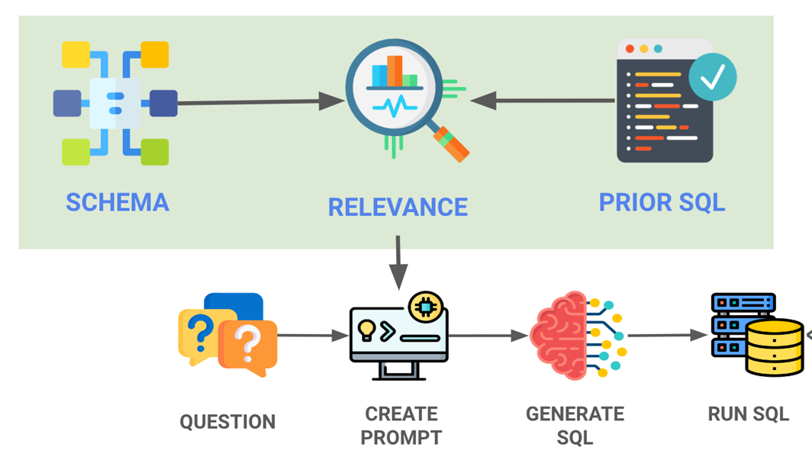
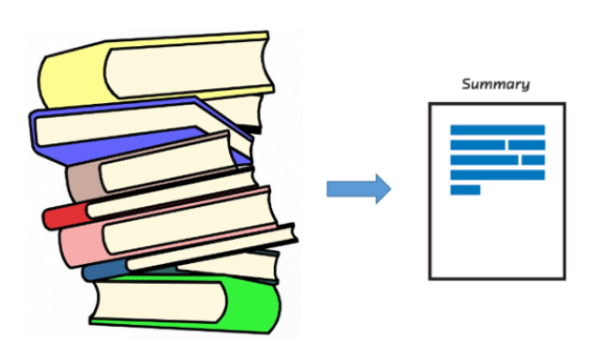

Om Patel — Projects
8 end-to-end ML & AI systems — from raw data to deployed APIs, dashboards, and LLM-powered tools
Credit Risk Modeling & Decision Intelligence System
End-to-end credit risk platform on 30,000 records. WOE scorecard (champion) + XGBoost (challenger) tracked via MLflow. Monte Carlo simulation (500k scenarios) for VaR & CVaR. Three-scenario stress testing — fully deployed FastAPI + HTML dashboard.

SQL AI Agent — Natural Language to SQL
LLM-powered agent (GPT-4-turbo) that converts natural language into validated SQL and executes against live PostgreSQL. Schema-aware query generation with error handling — zero SQL knowledge required from end users. Flask API + Streamlit UI.
Hourly CO₂ Emission Prediction — MLOps Pipeline
Polynomial Regression (degree 2, R² = 0.94) for industrial CO₂ emission forecasting in steel production. Containerised with Docker, served via Flask REST API — live on Render. PCA applied for feature reduction and emission pattern visualisation.

Text Summarization Using Transformers
Dual-mode summarisation: BART (facebook/bart-large-cnn) for abstractive and MiniLM + cosine similarity for extractive. Handles PDF & .txt uploads. Chunking strategy for BART's 1024-token limit. ROUGE-1 = 0.44 evaluated on CNN/DailyMail.
Image Colorization using Conditional GANs (Pix2Pix)
Conditional GAN (U-Net generator + PatchGAN discriminator) trained on 8,000 COCO images. Achieves SSIM = 0.81 and PSNR = 27.4 dB. Combined L1 + adversarial loss — gradient clipping + StepLR for stable GAN training.
Medical Insurance Cost Estimation
Polynomial regression (R² = 0.81 test) outperforms linear baseline (R² = 0.63) on 1,338 insurance records. Smokers pay 2.8× more on average. Southeast region shows highest charges at $14,735 — actionable for pricing strategy.
Bank Customer Churn Prediction
Random Forest on 10,000 customers with 80:20 class imbalance. SMOTE vs class-weight adjustment compared — best config achieves F1 = 0.76 on churn class. Age, balance, and credit score identified as top three predictors.
Bike Store Sales Analysis — Power BI Dashboard
3-page Power BI dashboard integrating 9 tables via star schema. DAX measures for revenue growth, customer LTV, and inventory turnover. Interactive slicers for time period, category, and location — surfaced top-performing stores and seasonal demand patterns.